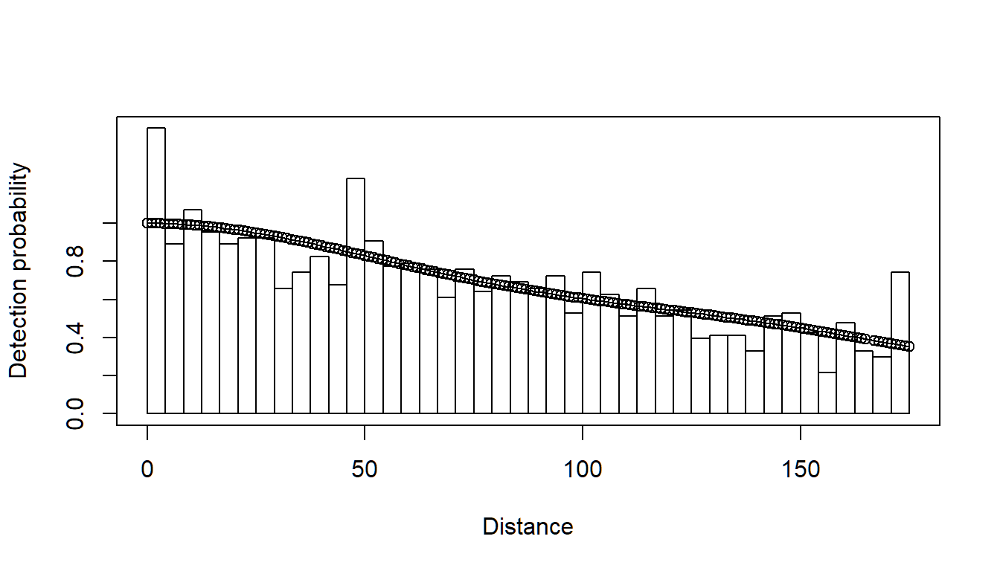
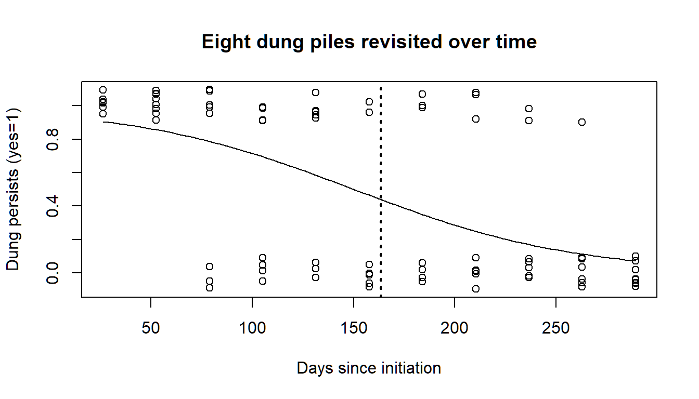

Multipliers and indirect surveys
We consider indirect methods to estimate abundance and hence include multipliers in the abundance calculations. The first problem uses data from a dung survey of deer and there are two levels of multipliers that need to be accounted for (dung production rate and dung decay rate).
1 Objectives
The objectives of this exercise are to
- Fit detection functions to cues
- Obtain relevant multipliers
- Use the multipliers in the
dht2function to obtain animal abundances.
2 Dung survey of deer
The question is how to estimate of the density of sika deer in a number of woodlands in the Scottish Borders (Marques et al. 2001). These animals are shy and will be aware of the presence of an observer before the observer detects them, making surveys of this species challenging. As a consequence, indirect estimation methods have been applied to this problem. In this manner, an estimate of density is produced for some sign generated by deer (in this case, faecal or dung pellets) and this estimate is transformed to density of deer (\(D_{\textrm{deer}}\)) by
\[ \hat D_{\textrm{deer}} = \frac{\textrm{dung deposited daily}}{\textrm{dung production rate (per animal)}} \] where the dung deposited daily is given by
\[ \textrm{dung deposited daily} = \frac{\hat D_{\textrm{pellet groups}}}{\textrm{mean time to decay}} \] Hence, we use distance sampling to produce a pellet group density estimate, then adjust it accordingly to account for the production and decay processes operating during the time the data were being acquired. We will also take uncertainty in the dung production and decay rates into account in our final estimate of deer density.
Data from 9 woodlands (labelled A-H and J) were collected according to the survey design (Figure 1) but note that data from block D were not included in this exercise.

Location of sika deer survey in southern Scotland and the survey design (from Marques et al. (2001). Note the differing amounts of effort in different woodlands based on information derived from pilot surveys.
In addition to these data, we also require estimates of the production rate. From a literature search, we learn that sika deer produce 25 pellet groups daily but this source did not provide a measure of variability of this estimate. During the course of our surveys we also followed the fate of some marked pellet groups to estimate the decay (disappearance) rates of a pellet group. A thorough discussion of methods useful for estimating decay rates and associated measures of precision can be found in Laing et al. (2003).
There are many factors that might influence both production and decay rates, and for purposes of this exercise we will make the simplifying assumption that decay rate is homogeneous across these woodlands; with their mean time to decay of 163 days and a standard error of 13 days. (If you were to conduct a survey such as this, you would want to investigate this assumption more thoroughly.)
2.1 Getting started
These data (called sikadeer) are available in the Distance package. Detection of deer dung takes place at small spatial scales; perpendicular distances are measured in centimeters. But transects were long; measured in kilometers and deer densities are customarily reported in numbers kilometer-2.
library(Distance)
data(sikadeer)
conversion.factor <- convert_units("centimeter", "kilometer", "square kilometer")2.2 Fit detection function to dung pellets
Fit the usual series of models (i.e. half normal, hazard rate, uniform) models to the distances to pellet groups and decide on a detection function. This detection function will be used to obtain \(\hat D_{\textrm{pellet groups}}\).
Have a look at the Summary statistics for this model - what do you notice about the allocation of search effort in each woodland?
2.3 Multipliers
The next step is to create an object which contains the multipliers we wish to use. We already have estimates of dung production rates but need similar information on dung decay (or persistence) rate. Analysis is based upon methods presented in Laing et al. (2003).
Data to calculate dung persistence has been collected in the file dung_persistence.csv.
MIKE.persistence <- function(DATA) {
# Purpose: calculate mean persistence time (mean time to decay) for dung/nest data
# Input: data frame with at least two columns:
# DAYS - calendar day on which dung status was observed
# STATE - dung status: 1-intact, 0-decayed
# Output: point estimate, standard error and CV of mean persistence time
#
# Attribution: code from Mike Meredith website:
# http://www.mikemeredith.net/blog/2017/Sign_persistence.htm
# Citing: CITES elephant protocol
# https://cites.org/sites/default/files/common/prog/mike/survey/dung_standards.pdf
## Fit logistic regression model to STATE on DAYS, extract coefficients
dung.glm <- glm(STATE ~ DAYS, data=DATA, family=binomial(link = "logit"))
betas <- coefficients(dung.glm)
## Calculate mean persistence time
mean.decay <- -(1+exp(-betas[1])) * log(1+exp(betas[1])) / betas[2]
## Calculate the variance of the estimate
vcovar <- vcov(dung.glm)
var0 <- vcovar[1,1] # variance of beta0
var1 <- vcovar[2,2] # variance of beta1
covar <- vcovar[2,1] # covariance
deriv0 <- -(1-exp(-betas[1]) * log(1+exp(betas[1])))/betas[2]
deriv1 <- -mean.decay/betas[2]
var.mean <- var0*deriv0^2 + 2*covar*deriv0*deriv1 + var1*deriv1^2
## Calculate the SE and CV and return
se.mean <- sqrt(var.mean)
cv.mean <- se.mean/mean.decay
out <- c(mean.decay, se.mean, 100*cv.mean)
names(out) <- c("Mean persistence time", "SE", "%CV")
plot(decay$DAYS, jitter(decay$STATE, amount=0.10), xlab="Days since initiation",
ylab="Dung persists (yes=1)",
main="Eight dung piles revisited over time")
curve(predict(dung.glm, data.frame(DAYS=x), type="resp"), add=TRUE)
abline(v=mean.decay, lwd=2, lty=3)
return(out)
}
decay <- read.csv("dung_persistence.csv")
persistence.time <- MIKE.persistence(decay)
print(persistence.time)Running the above command should have produced a plot of dung persistence versus days since produced and fitted a logistic regression (this is like a simple linear regression but restricts the response to taking values between 0 and 1). Note the points can in reality only take values between 0 and 1 but for the purposes of plotting have been ‘jittered’ to avoid over-plotting.
An estimate of mean persistence time and measure of variability are also provided - make a note of these as they will be required below.
As stated above, we want an object which contains information on the dung production rate (and standard error) and dung decay rate (and standard error). The following command creates a list containing two data frames:
creationcontains estimates of the dung production rate and associated standard errordecaycontains the dung decay rate and associated standard error whereXXandYYare the estimates you obtained from the dung decay rate analysis.
# Create list of multipliers
mult <- list(creation = data.frame(rate=25, SE=0),
# decay = data.frame(rate=XX, SE=YY))
multThe final step is to use these multipliers to convert \(\hat D_{\textrm{pellet groups}}\) to \(\hat D_{\textrm{deer}}\) (as in the equations above) - for this we need to employ the dht2 function. In the command below the multipliers= argument allows us to specify the rates and standard errors. There are a couple of other function arguments that need some explanation:
strat_formula=~Region.Labelis specified to take into account the design (i.e. different woodlands or blocks).stratification="geographical"is specified because we want to produce an overall estimate density that is the mean of the woodland specific densities weighted by area of each block.deer.dfis the detection function you have fitted.
deer.ests <- dht2(deer.df, flatfile=sikadeer, strat_formula=~Region.Label,
convert_units=conversion.factor, multipliers=mult,
stratification="geographical")
deer.ests3 Other stratification choices with dht2
This example of Sika deer on different hunting estates uses geographical stratification. There is also the option of using the option replicate for the stratification argument. This is useful when there are repeated surveys in a geographic area; the average abundance is computed and variance is variability between surveys. Alternatively effort_sum is used with replicate surveys, but few replicates reporting average variance. Finally, the specification of stratification="object" can be used when detections are made of different species, sexes or ages of animals. This option will produce species-specific abundance estimates as well as abundance estimate over all species, properly calculating variance of total abundance. More information is availabe in this diagramatic comparison as well as in the help file for ?dht2.
The function dht2 also provides information on the components of variance. Make a note of the these (contribution of detection function, encounter rate, decay rate and what happened to production rate component?) in each strata.
4 References
Laing SE, ST Buckland, RW Burn, D Lambie and A Amphlett. (2003) Dung and nest surveys: estimating decay rate. Journal of Applied Ecology 40:1102-1111
Marques, FFC, ST Buckland, D Goffin, CE Dixon, DL Borchers, BA Mayle and AJ Peace. (2001) Estimating deer abundance from line transect surveys of dung: sika deer in southern Scotland. Journal of Applied Ecology 38: 349–363. https://doi.org/10.1046/j.1365-2664.2001.00584.x.
Meredith, M. (2017) How long do animal signs remain visible? http://www.mikemeredith.net/blog/2017/Sign_persistence.htm for a thorough description of decay rate estimation.
Multipliers for creation and disappearance rates
library(Distance)
data(sikadeer)
conversion.factor <- convert_units("centimeter", "kilometer", "square kilometer")deer.df <- ds(sikadeer, key="hn", truncation="10%")
plot(deer.df)
deer.df$dht$individuals$summary## Region Area CoveredArea Effort n k ER se.ER cv.ER
## 1 A 13.9 595.0 1.70 1217 13 715.88234 119.918872 0.1675120
## 2 B 10.3 385.0 1.10 396 10 359.99999 86.859289 0.2412758
## 3 C 8.6 157.5 0.45 17 3 37.77778 8.521202 0.2255612
## 4 E 8.0 297.5 0.85 30 5 35.29412 16.568939 0.4694533
## 5 F 14.0 70.0 0.20 29 1 145.00000 0.000000 0.0000000
## 6 G 15.2 140.0 0.40 32 3 80.00000 39.686269 0.4960784
## 7 H 11.3 70.0 0.20 3 1 15.00000 0.000000 0.0000000
## 8 J 9.6 35.0 0.10 7 1 70.00000 0.000000 0.0000000
## 9 Total 90.9 1750.0 5.00 1731 37 346.19999 68.158305 0.1968755
## Mean persistence time SE %CV
## 163.396748 14.226998 8.707026Using these results, the multipliers can be specified:
# Create list of multipliers
mult <- list(creation = data.frame(rate=25, SE=0),
decay = data.frame(rate=163, SE=14))
mult## $creation
## rate SE
## 1 25 0
##
## $decay
## rate SE
## 1 163 14# Obtain animal estimates - overall estimate, weight by effort
deer_ests <- dht2(deer.df, flatfile=sikadeer, strat_formula=~Region.Label,
convert_units=conversion.factor, multipliers=mult,
stratification="geographical")## Warning in dht2(deer.df, flatfile = sikadeer, strat_formula = ~Region.Label, :
## One or more strata have only one transect, cannot calculate empirical encounter
## rate variancedeer_ests## Summary statistics:
## Region.Label Area CoveredArea Effort n k ER se.ER cv.ER
## A 13.9 0.005950 1.70 1217 13 715.882 119.919 0.168
## B 10.3 0.003850 1.10 396 10 360.000 86.859 0.241
## C 8.6 0.001575 0.45 17 3 37.778 8.521 0.226
## E 8.0 0.002975 0.85 30 5 35.294 16.569 0.469
## F 14.0 0.000700 0.20 29 1 145.000 0.000 0.000
## G 15.2 0.001400 0.40 32 3 80.000 39.686 0.496
## H 11.3 0.000700 0.20 3 1 15.000 0.000 0.000
## J 9.6 0.000350 0.10 7 1 70.000 0.000 0.000
## Total 90.9 0.017500 5.00 1731 37 346.200 154.425 0.446
##
## Abundance estimates:
## Region.Label Estimate se cv LCI UCI df
## A 1027 197.474 0.192 691 1527 20.797
## B 383 99.171 0.259 220 667 11.955
## C 34 8.200 0.244 15 75 2.759
## E 29 13.959 0.479 9 99 4.329
## F 210 19.752 0.094 174 252 60314.218
## G 126 63.399 0.505 18 858 2.147
## H 18 1.649 0.094 15 21 60314.221
## J 69 6.539 0.094 58 83 60314.216
## Total 1895 272.342 0.144 1412 2543 25.610
##
## Component percentages of variance:
## Region.Label Detection ER Multipliers
## A 4.07 75.96 19.97
## B 2.24 86.76 10.99
## C 2.52 85.14 12.34
## E 0.66 96.13 3.22
## F 16.93 0.00 83.07
## G 0.59 96.52 2.89
## H 16.93 0.00 83.07
## J 16.93 0.00 83.07
## Total 0.72 95.73 3.554 Notes regarding dung surveys
- overall estimate of density
- most effort took place in woodland A where deer density was high. Therefore, the overall estimate is between the estimated density in woodland A and the lower densities in the other woodlands.
- components of variance
- we now have uncertainty associated with the encounter rate, detection function and decay rate (note there was no uncertainty associated with the production rate) and so the components of variation for all three components are provided.
In woodland A, there were 13 transects on which over 1,200 pellet groups were detected: uncertainty in the estimated density (measured by CV) was 19% and the variance components were apportioned as detection probability 4%, encounter rate 76% and multipliers 20%.
In woodland E, there were 5 transects and 30 pellet groups resulting in a coefficient of variation (CV) of 48%: the variance components were apportioned as detection probability 0.7%, encounter rate 96% and multipliers 3%.
The CV of the abundance estimates for blocks F, H and J are identical (9%) because a pooled detection function was used across all blocks and the dung deposition and decay rates were not block-specific. The only element of the computation remaining that is block-specific is the encounter rate; and for these three blocks there was but a single transect per block, meaning the encounter rate variance could not be computed and was set to zero.
The estimated abundance across all blocks had a CV of 14%. But far and away, the greatest contribution to this uncertainty was encounter rate variance–differences in pellet encounters between transects. In the context of distance sampling, the uncertainty in the parameter estimates of the detection function accounts for <1% in the total estimate of deer abundance across the blocks.